Transformers & LLM
Comprendre l'architecture Transformer — self-attention, multi-head attention, encodeur/décodeur — et savoir utiliser les LLMs (BERT, GPT, T5) pour des tâches NLP via Hugging Face et le prompt engineering.
- Cheatsheet — Transformers & LLM
- ️ Récapitulatif — Erreurs clés à éviter
- 1) Pourquoi les Transformers ?
- 2) Rappels RNN — Limites
- 3) Prérequis techniques
- 4) Architecture Transformer
- 5) Variantes d'architecture
- 6) Utiliser un LLM pour sa tâche
- 7) Évaluer les LLMs
- 8) Hugging Face et la librairie `transformers`
- Bibliographie
- 📎 Annexe — Nombre de paramètres (Transformer original)
- Challenges
📋 Cheatsheet — Transformers & LLM
Self-Attention — Formule
## Scaled Dot-Product Attention
## Attention(Q, K, V) = softmax(Q @ K.T / √d_k) @ V
## Q = query : "Que cherche ce token ?" shape (seq_len, d_k)
## K = key : "Qui suis-je ?" shape (seq_len, d_k)
## V = value : "Quelle info j'apporte ?" shape (seq_len, d_v)
## Q, K, V = X @ W_Q, X @ W_K, X @ W_V # projections linéaires apprises
## d_k = d_model / n_heads # ex: 512 / 8 = 64Architecture Transformer (résumé)
## Encoder (×6 blocs) :
## Input → Token Embedding + Positional Encoding
## → Multi-Head Self-Attention → Add & Norm
## → Feed-Forward Network → Add & Norm
## → Output : représentation contextuelle (shape = seq_len × d_model)
## Decoder (×6 blocs) :
## Output → Token Embedding + Positional Encoding
## → Masked Multi-Head Self-Attention → Add & Norm
## → Cross-Attention (Q=decoder, K/V=encoder) → Add & Norm
## → Feed-Forward Network → Add & Norm
## → Linear(d_model → vocab_size) + Softmax → token suivantHugging Face — Pipeline
## pip install transformers
from transformers import pipeline
## Traduction anglais → français
translator = pipeline("translation", model="Helsinki-NLP/opus-mt-en-fr")
result = translator("I am a student studying in London")
result[0]['translation_text'] # "Je suis étudiante et j'étudie à Londres."
## Analyse de sentiment
classifier = pipeline("sentiment-analysis")
classifier("This movie was absolutely fantastic!")
## [{'label': 'POSITIVE', 'score': 0.9998}]
## Génération de texte
generator = pipeline("text-generation", model="gpt2")
generator("The future of AI is", max_length=50)Paramètres de génération
## Temperature : contrôle le caractère aléatoire
## T basse (0.1) → déterministe, focalisé
## T haute (1.5) → créatif, aléatoire
## Top-k : limite aux k tokens les plus probables
## Top-p (nucleus) : limite aux tokens dont la proba cumulée ≤ p
## Max tokens : longueur max de la sortie généréeMétriques d'évaluation NLP
## Classification : accuracy, precision, recall, F1 (comme en ML classique)
## Traduction → BLEU (precision-based, n-gram overlap)
## Résumé → ROUGE (recall-based, n-gram + LCS overlap)
## Génération → perplexité (surprise du modèle) + évaluation humaine⚠️ Récapitulatif — Erreurs clés à éviter
Confondre self-attention et cross-attention
La self-attention opère au sein d'une seule séquence (chaque token attend tous les autres tokens de la même séquence). La cross-attention opère entre deux séquences (le decoder attend les tokens de l'encoder).
❌ Croire que l'encoder et le decoder utilisent le même mécanisme d'attention partout
✅ Encoder = self-attention | Decoder = masked self-attention + cross-attention (Q=decoder, K/V=encoder)
Oublier le masking dans le decoder
Pendant l'entraînement, le decoder ne doit pas voir les tokens futurs — sinon il triche.
❌ Self-attention standard dans le decoder → le modèle voit la réponse avant de la prédire
✅ Masked self-attention : les positions futures sont mises à −∞ avant le softmax → attention = 0
Utiliser le mauvais tokenizer avec un modèle pré-entraîné
Chaque modèle a été entraîné avec son propre tokenizer — les vocabulaires et les encodages diffèrent.
❌ Tokenizer de BERT avec un modèle GPT-2 → tokens incohérents, prédictions absurdes
✅ Toujours charger le tokenizer qui correspond au modèle : AutoTokenizer.from_pretrained("model_name")
Ignorer que la complexité de l'attention est quadratique
L'attention calcule une matrice (seq_len × seq_len) — la mémoire et le calcul explosent avec la longueur de séquence.
❌ Passer des documents de 100 000 tokens à un Transformer standard → out of memory
✅ Limiter la longueur d'entrée au max_position_embeddings du modèle (ex: 512 pour BERT, 2048+ pour GPT)
Confondre encoder-only, decoder-only et encoder-decoder
Chaque architecture est conçue pour un type de tâche différent.
❌ Utiliser GPT (decoder-only) pour de la NER ou BERT (encoder-only) pour de la génération de texte
✅ Encoder-only (BERT) → compréhension (classification, NER) | Decoder-only (GPT) → génération | Encoder-decoder (T5) → seq2seq (traduction, résumé)
1) Pourquoi les Transformers ?
Les modèles de langage modernes (ChatGPT, Claude, Gemini…) sont tous basés sur l'architecture Transformer, introduite dans le papier "Attention is All You Need" (2017).
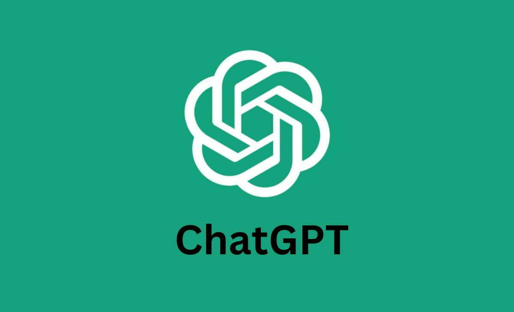
Les Transformers résolvent les trois problèmes majeurs des RNN :
| Problème RNN | Solution Transformer |
|---|---|
| Goulot d'information — tout compressé dans un seul vecteur caché | Attention — chaque token accède directement à tous les autres |
| Vanishing gradient — mémoire courte, même avec LSTM | Skip connections • attention directe = gradient stable |
| Calcul séquentiel — impossible de paralléliser | Parallélisation totale — tous les tokens traités simultanément |
2) Rappels RNN — Limites
2.1 Vanishing gradient through time
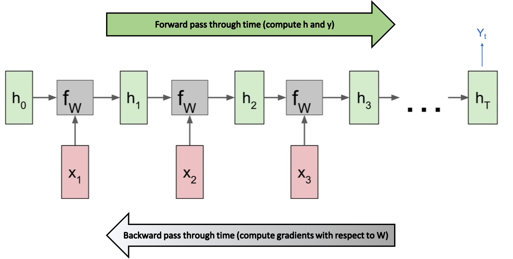
Pendant la backpropagation à travers le temps, le gradient s'annule à mesure qu'on remonte dans la séquence. Résultat : les RNN (même LSTM/GRU) ont un biais de récence — ils oublient le contexte lointain.
Exemple : "Sally adored reading; when she received a book on her birthday she was happy" — un RNN risque de prédire "older" au lieu de "happy" car "Sally" et "reading" sont trop loin.
👉 Illustrated Guide to RNNs — Michael Phi
3) Prérequis techniques
3.1 Intuition Query-Key-Value
L'attention fonctionne comme un dictionnaire Python avec lookup flou (soft lookup) :
## Lookup exact (dict classique)
words = {"cat": "animal", "dog": "animal", "talk": "verb"}
words["dog"] # → "animal"
## Lookup flou (attention)
## query = "puppy" → pas dans le dict, mais similaire à "dog"
## → résultat = mélange pondéré des values selon la similarité query-keysAu lieu d'un match exact, on calcule la similarité (produit scalaire) entre la query et toutes les keys, puis on pondère les values en conséquence.
3.2 Produit scalaire = mesure de similarité
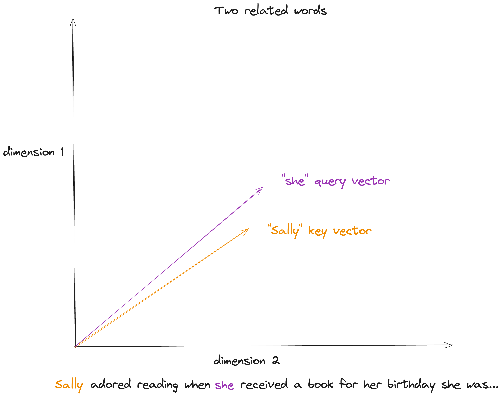
$\text{similarity}(q, k) = q \cdot k = \sum_{i=1}^{d} q_i \cdot k_i$
Vecteurs alignés → dot product élevé (similaires). Vecteurs orthogonaux → dot product ≈ 0 (non liés).
3.3 Softmax
Convertit des logits (nombres quelconques) en probabilités (valeurs entre 0 et 1, somme = 1).
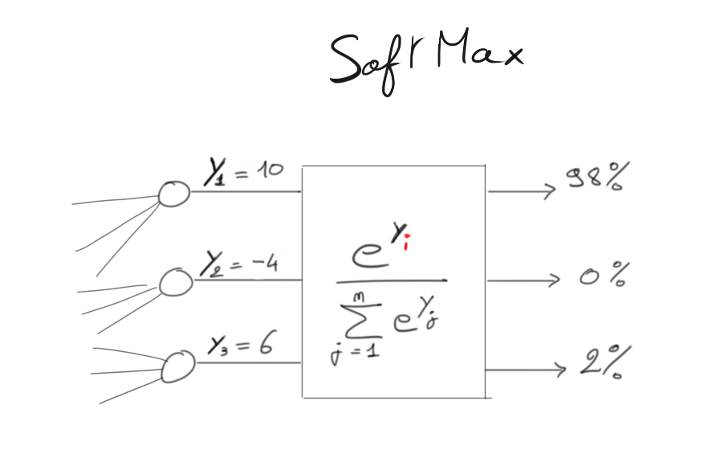
4) Architecture Transformer
4.1 Vue d'ensemble
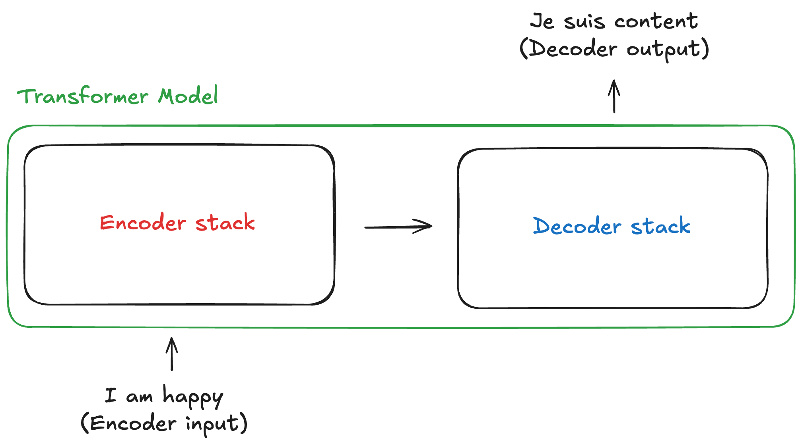
L'encoder et le decoder sont chacun composés d'un empilement de 6 blocs identiques (même structure, poids différents). Chaque bloc produit une représentation plus riche de l'entrée.
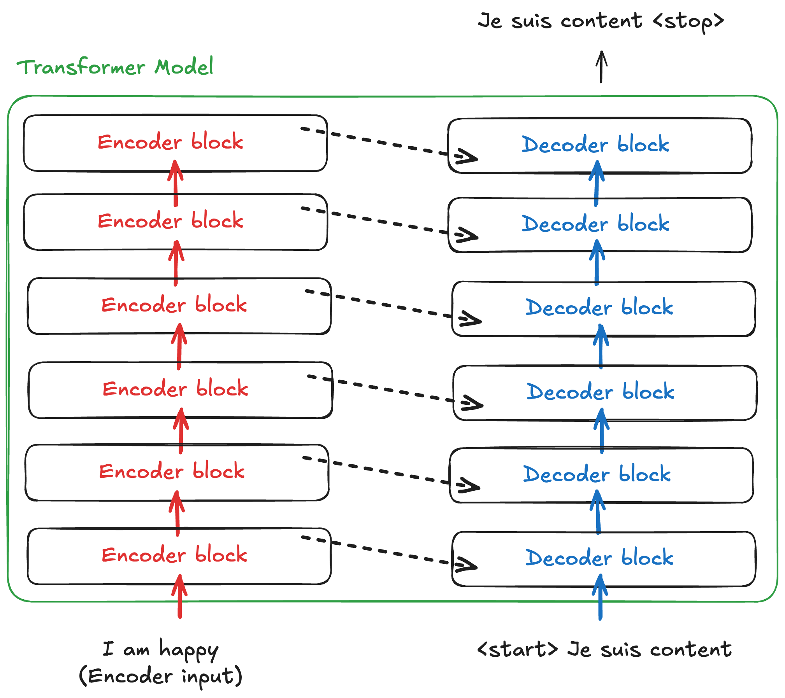
4.2 Entrées — Embedding + Positional Encoding
Tokenization en sous-mots (subword)
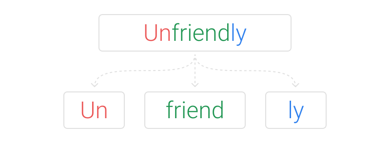
Les mots sont découpés en sous-unités (ex: "walking" → "walk" + "ing"), ce qui permet de gérer les mots inconnus et de partager des représentations entre mots similaires.
Positional Encoding
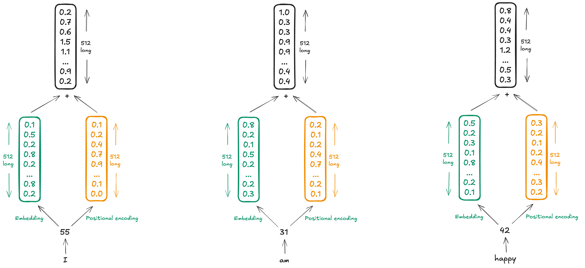
Un RNN traite les tokens séquentiellement — l'ordre est implicite. Un Transformer traite tous les tokens en parallèle — il faut ajouter explicitement l'information de position via un vecteur de positional encoding (appris ou sinusoïdal).
Dans "Dog bites man" vs "Man bites dog", le token "dog" a le même embedding mais un positional encoding différent.
4.3 Bloc Encoder — Self-Attention
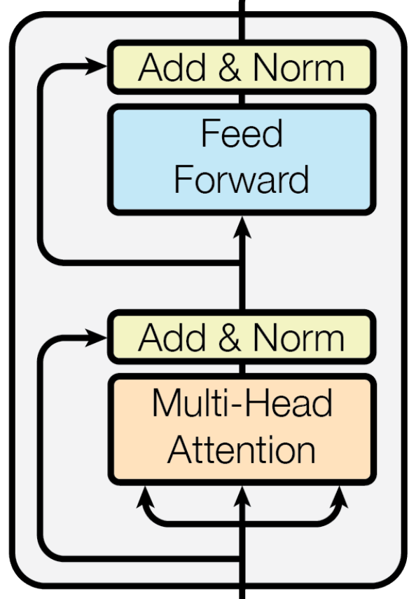
Chaque token est projeté en 3 vecteurs via des matrices de poids apprises :
- Query (Q) : "Que cherche ce token ?"
- Key (K) : "Qui suis-je ?"
- Value (V) : "Quelle information j'apporte ?"
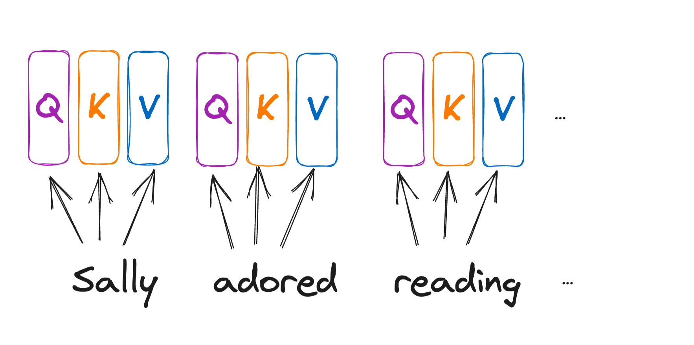
Calcul de l'attention pas à pas
1) Similarité — produit scalaire Q · K pour chaque paire de tokens :
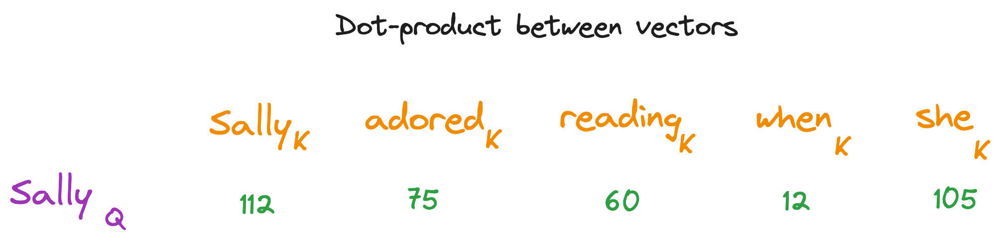
2) Scaling — diviser par √d_k pour éviter les valeurs trop grandes :
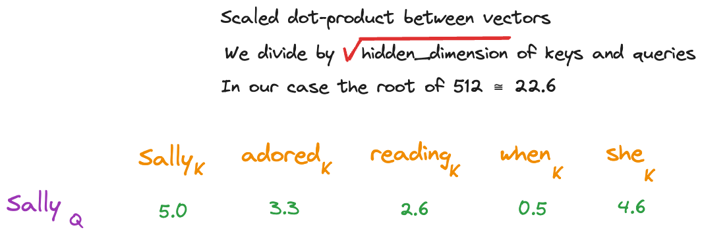
3) Softmax — convertir en poids d'attention (0 à 1, somme = 1) :
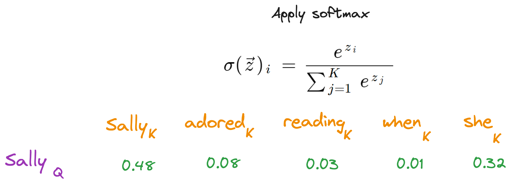
4) Matrice d'attention — pour tous les tokens en parallèle :
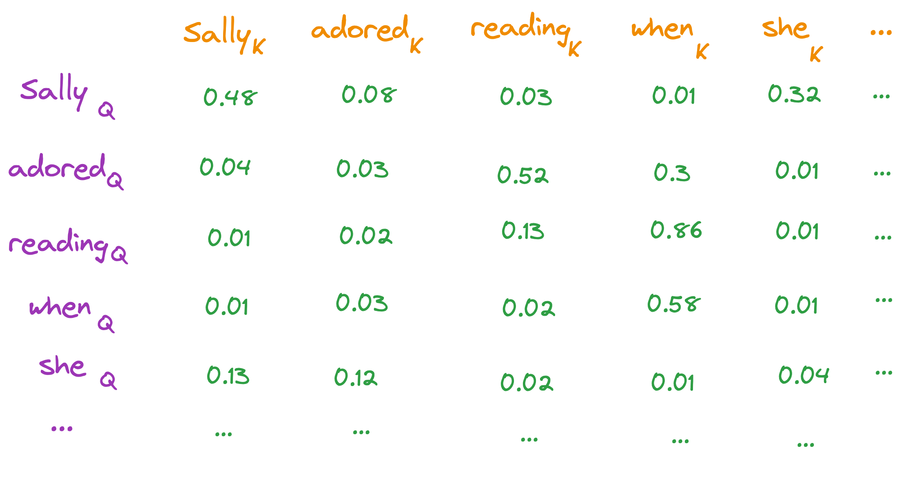
La matrice d'attention est de taille (seq_len × seq_len) — la complexité est quadratique en la longueur de séquence.
5) Output = attention × values :
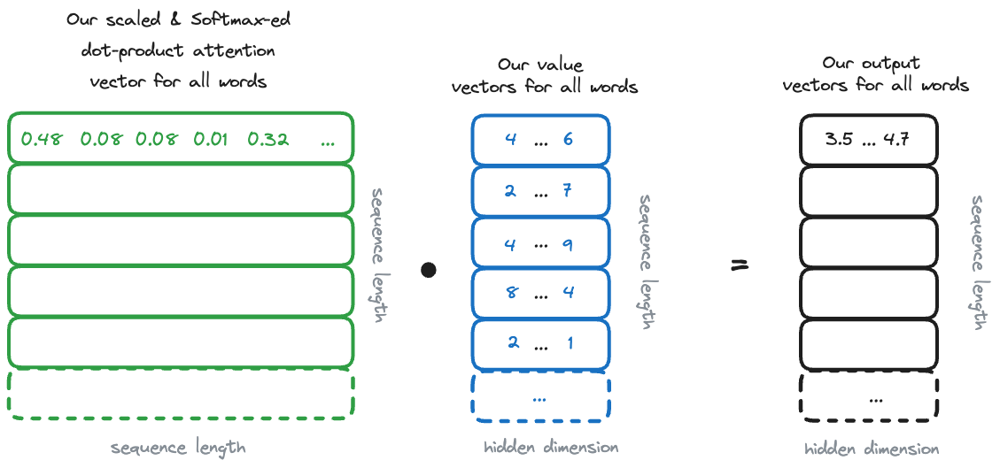
Formule complète
$\text{Attention}(Q, K, V) = \text{softmax}\left(\frac{QK^T}{\sqrt{d_k}}\right) V$
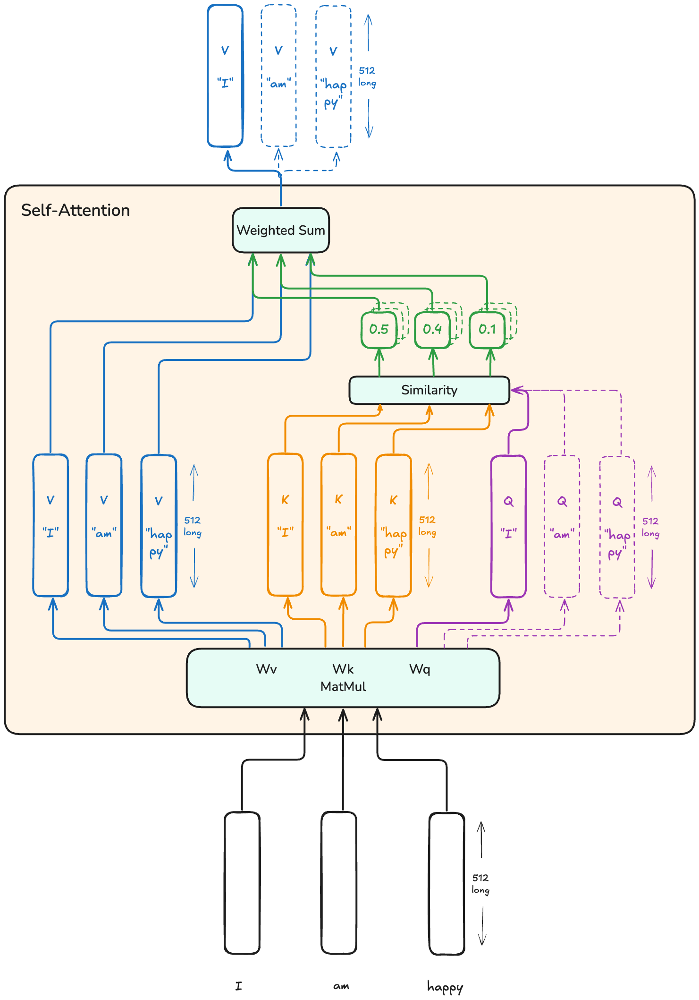
4.4 Multi-Head Attention
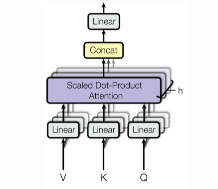
Plutôt qu'une seule attention sur d_model=512, on utilise 8 têtes (heads) qui travaillent chacune sur d_k=64 dimensions. Chaque tête peut se spécialiser sur un aspect différent (sémantique, syntaxe…). Les sorties sont concaténées puis projetées via une couche linéaire.
4.5 Résidu, normalisation et FFN
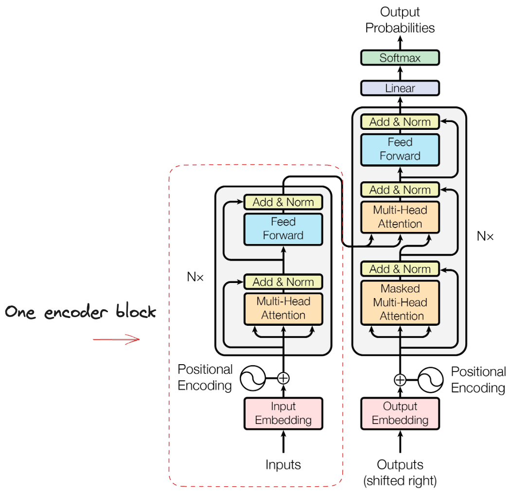
Chaque sous-couche est suivie de :
- Skip connection (connexion résiduelle) : le modèle n'apprend que le résidu → stabilise et accélère l'entraînement
- Layer Normalization : normalise chaque sortie → stabilise l'entraînement
- Feed-Forward Network : deux couches linéaires avec ReLU — ajoute la non-linéarité et mélange les features au sein de chaque token
4.6 Le Decoder
Masked Self-Attention
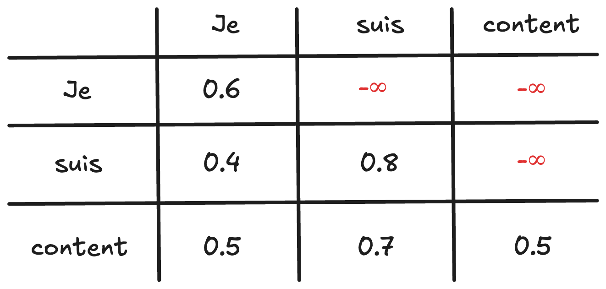
Identique à la self-attention de l'encoder, sauf que les positions futures sont masquées (−∞ → softmax donne 0) pour empêcher le modèle de "tricher" pendant l'entraînement.
Cross-Attention
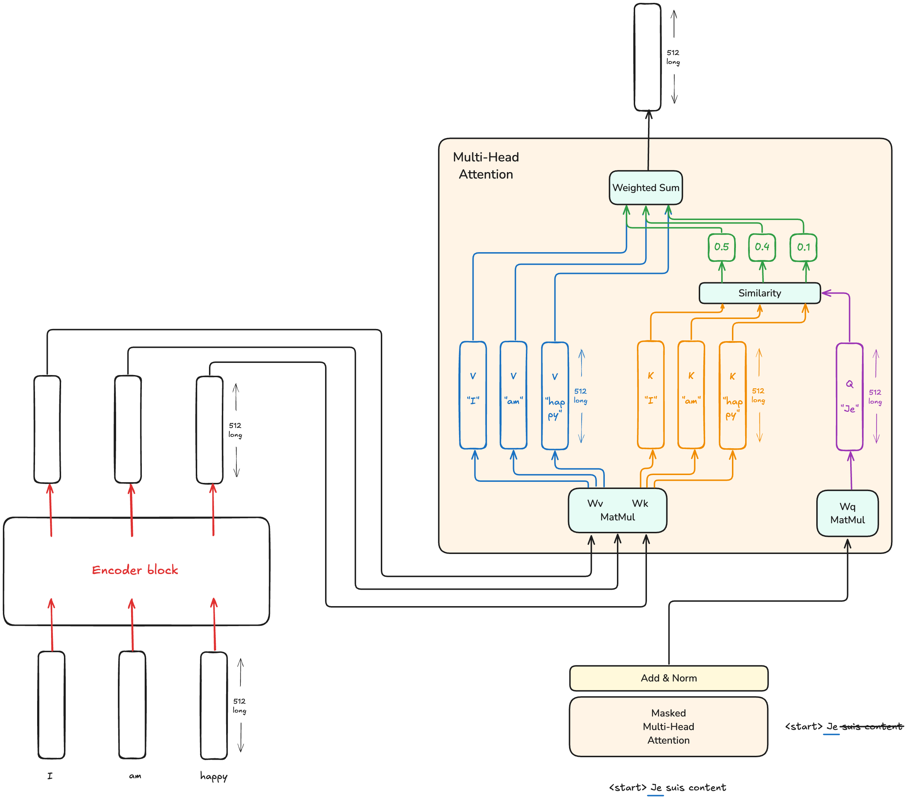
La query vient du decoder, les keys et values viennent de l'encoder. Cela permet au decoder de "consulter" la représentation de la séquence source pour générer chaque token de sortie.
4.7 Couche de sortie
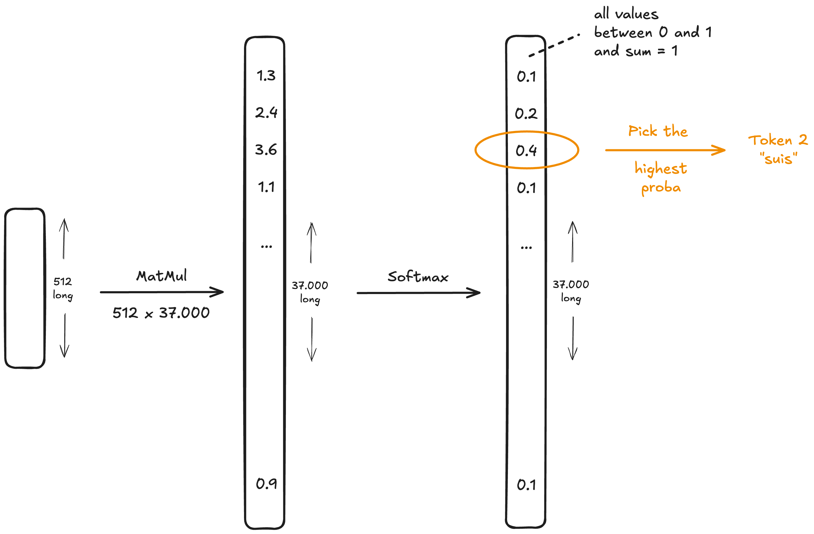
La dernière couche est une classification sur tout le vocabulaire :
layers.Dense(vocab_size, activation='softmax') # ex: 37 000 tokens possibles4.8 Entraînement
- Entrées : séquences source + séquences cible (avec token
<start>) - Loss : categorical cross-entropy entre la prédiction et le vrai token suivant
- Backpropagation en parallèle sur tous les tokens
- Paramètres : ~65M pour le Transformer original (d_model=512, 6 blocs, vocab=37K)
Les principaux facteurs du nombre de paramètres sont d_model et la taille du vocabulaire. Les LLMs modernes utilisent d_model de 4096 à 12288+.
5) Variantes d'architecture
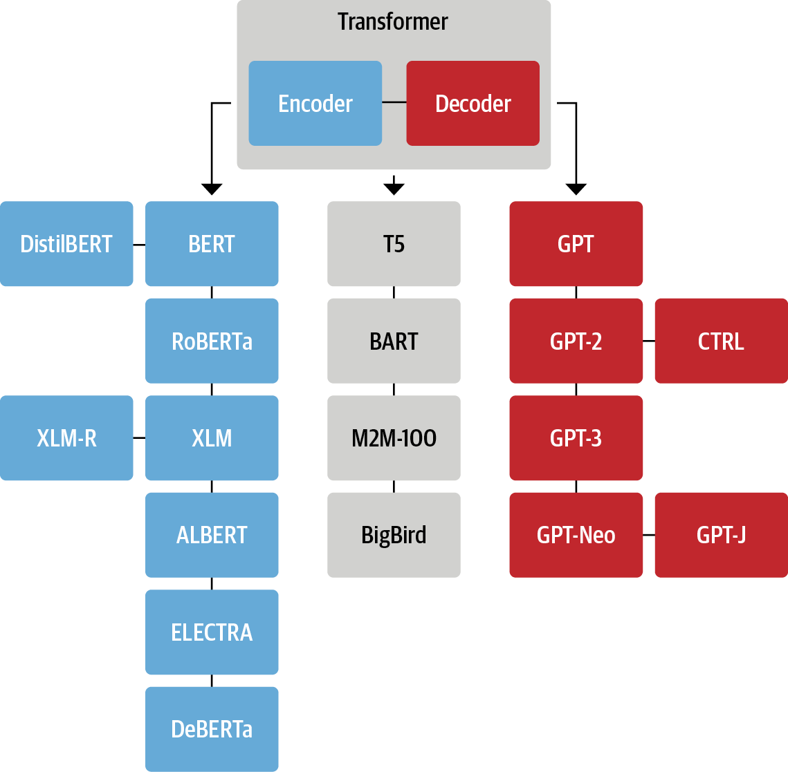
| Architecture | Tâches | Exemples | Attention |
|---|---|---|---|
| Encoder-Decoder | Traduction, résumé, QA | T5, BART | Self + Cross |
| Encoder-only | Classification, NER, sentiment | BERT | Bidirectionnelle |
| Decoder-only | Génération, chatbot, code | GPT-2/3/4, Claude, Llama | Causale (masquée) |
5.1 Encoder-only — BERT
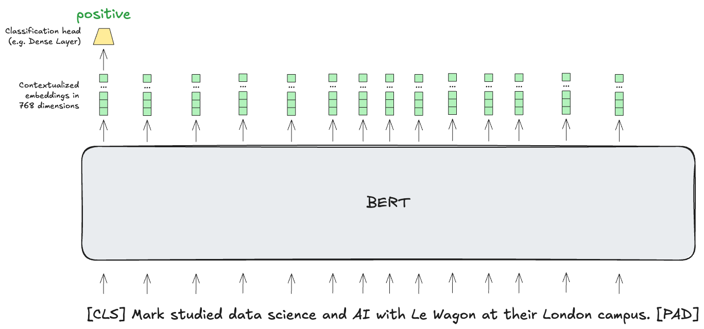
BERT lit toute la séquence en une seule passe (attention bidirectionnelle). Le token spécial [CLS] produit une représentation résumée de la phrase entière → on ajoute une tête de classification dessus.
5.2 Decoder-only — GPT
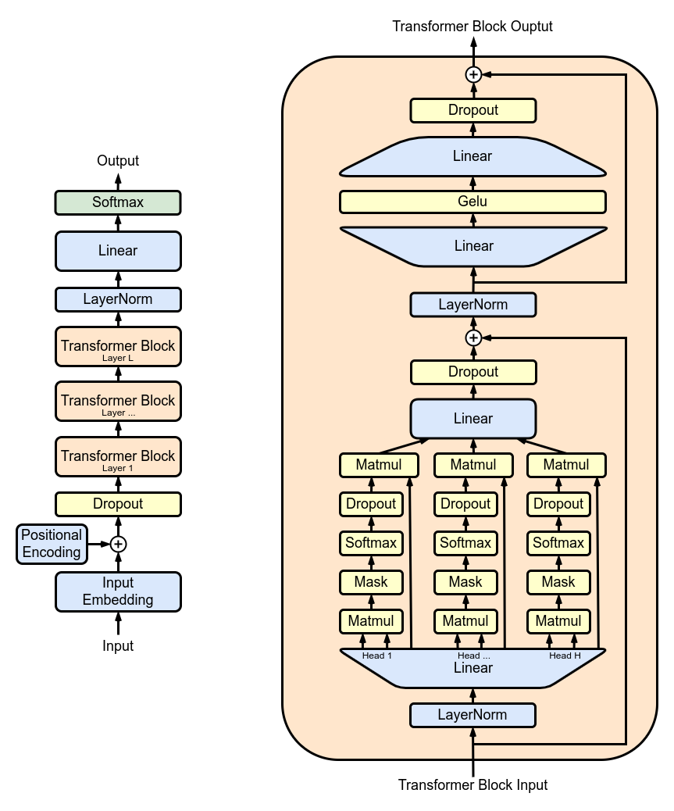
GPT génère du texte de gauche à droite, un token à la fois. Pas d'encoder — tout repose sur le prompt d'entrée et l'auto-régression.
5.3 Vision Transformers et modèles multimodaux
Les Vision Transformers (ViT) découpent une image en patches et les traitent comme une séquence de tokens — même architecture que pour le texte.
6) Utiliser un LLM pour sa tâche
6.1 Encoder-only (BERT) — Fine-tuning
On ajoute une tête (head) adaptée à la tâche au-dessus de l'encodeur pré-entraîné :
- Classification de sentiment → Dense(n_classes) sur la sortie
[CLS] - NER → Dense(n_entity_types) sur chaque token
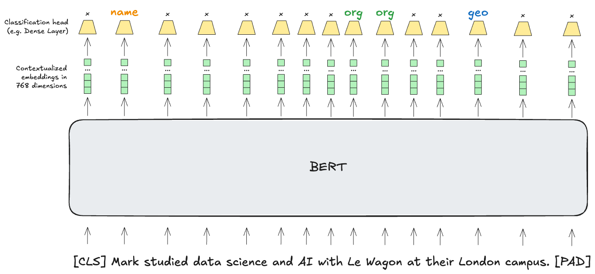
Deux options : (1) ne fine-tuner que la tête, ou (2) fine-tuner tête + encoder (unfreeze).
6.2 Encoder-Decoder (T5) — Prompt textuel
T5 traite tout comme du texte-vers-texte :
summarize: state authorities dispatched emergency crews...
translate English to German: That is good.
cola sentence: The course is jumping well.6.3 Decoder-only (GPT) — Prompt Engineering
Les modèles génératifs produisent la suite de la séquence d'entrée. Tout passe par le prompt.
Zero-shot (pas d'exemple) :
Q: Who was the first president of the United States?
A:Few-shot (quelques exemples) :
Translate English to French:
English: Hello → French: Bonjour
English: Thank you → French: Merci
English: Good night → French:On peut utiliser un modèle génératif pour de la classification en formulant le prompt correctement : "Classify this review as POSITIVE, NEUTRAL or NEGATIVE. Review: ... Sentiment:"
6.4 Paramètres de génération
| Paramètre | Rôle | Valeurs typiques |
|---|---|---|
| 🌡️ Temperature | Contrôle l'aléatoire du softmax final | 0.1 (déterministe) → 1.5 (créatif) |
| 🔝 Top-k | Limite aux k tokens les plus probables | 10–50 |
| 📈 Top-p (nucleus) | Limite aux tokens dont la proba cumulée ≤ p | 0.9–0.95 |
| 📝 Max tokens | Longueur max de la sortie | Selon la tâche |
👉 OpenAI Playground — tester les paramètres avec GPT
👉 Google AI Studio — tester avec Gemini
7) Évaluer les LLMs
7.1 Tâches de classification
Accuracy, Precision, Recall, F1 — exactement comme en ML classique.
7.2 Tâches seq2seq (traduction, résumé)
| Métrique | Type | Principe | Usage |
|---|---|---|---|
| BLEU | Precision-based | Overlap de n-grams entre texte généré et référence | Traduction |
| ROUGE | Recall-based | Combien d'info de la référence est dans le texte généré | Résumé |
Variantes ROUGE : ROUGE-1 (unigrams), ROUGE-2 (bigrams), ROUGE-L (plus longue sous-séquence commune).
7.3 Tâches génératives ouvertes
- Perplexité : mesure la "surprise" du modèle face aux données (utilisée pendant l'entraînement)
- Évaluation humaine : fluence, pertinence, cohérence, factualité
- LLM-as-a-judge : utiliser un autre LLM pour évaluer la qualité des réponses
- Code : exact match, BLEU, passage des tests unitaires
8) Hugging Face et la librairie transformers
8.1 Présentation
Hugging Face est une plateforme open-source donnant accès à des milliers de modèles pré-entraînés (BERT, GPT, T5, Llama…) via une API simple et unifiée.
## pip install transformers
from transformers import pipeline
## Traduction
translator = pipeline("translation", model="Helsinki-NLP/opus-mt-en-fr")
translator("I am a student studying in London")
## → [{'translation_text': "Je suis étudiante et j'étudie à Londres."}]
## Sentiment
classifier = pipeline("sentiment-analysis")
classifier("This movie was terrible")
## → [{'label': 'NEGATIVE', 'score': 0.9997}]
## Génération
generator = pipeline("text-generation", model="gpt2")
generator("The future of AI is", max_length=50)8.2 Sous le capot
Un pipeline combine un tokenizer et un modèle. Chaque modèle a son propre tokenizer — il faut toujours les utiliser ensemble.
from transformers import AutoTokenizer, AutoModelForSequenceClassification
tokenizer = AutoTokenizer.from_pretrained("distilbert-base-uncased")
model = AutoModelForSequenceClassification.from_pretrained("distilbert-base-uncased")Si le pipeline a été créé avec PyTorch mais que vous travaillez avec TensorFlow, préfixer le nom du modèle par TF et passer from_pt=True.
📚 Bibliographie
- 👉 Attention is All You Need — Vaswani et al. (2017) — le papier fondateur
- 👉 The Illustrated Transformer — Jay Alammar — visualisations pas à pas
- 👉 The Deep Learning Bible — gratuit, mis à jour continuellement
- 👉 Intro to Transformers — Lena Voita
- 👉 StatsQuest — Self-Attention — vidéo pas à pas
- 👉 HuggingFace + Transformers Textbook (O'Reilly)
- 👉 GitHub notebooks du livre ci-dessus — accès libre
- 👉 Positional Encoding expliqué (vidéo)
📎 Annexe — Nombre de paramètres (Transformer original)
| Composant | Formule | Valeurs (d_model=512) | Total (M) |
|---|---|---|---|
| Token embeddings | vocab × d_model | 37 000 × 512 | 19 |
| Attention Q/K/V | d_model × d_k × n_heads × n_layers × 3 | 512 × 64 × 8 × 6 × 3 | 14 |
| Attention output projection | d_model × d_model × n_layers × 2 | 512 × 512 × 6 × 2 | 4.7 |
| FFN | (d_model × d_ff + d_ff × d_model) × n_layers × 2 | (512 × 2048 × 2) × 6 × 2 | 25 |
| LayerNorm | (γ + β) × d_model × sous-couches | ~ | 0.02 |
Total ≈ 65 millions de paramètres pour le Transformer original. Les LLMs modernes ont des milliards de paramètres (GPT-3 = 175B, GPT-4 estimé > 1T).
🚀 Challenges
- Utiliser Hugging Face
pipelinepour de la traduction, de l'analyse de sentiment et de la génération de texte - Fine-tuner un modèle BERT pour une tâche de classification sur un dataset custom
- Expérimenter avec les paramètres de génération (temperature, top-k, top-p) et observer leur impact
- 🧭 Introduction
- 1. Pourquoi les Transformers ? Les limites des RNN
- 2. Les briques de base
- 3. Le mécanisme de Self-Attention
- 4. Multi-Head Attention : plusieurs regards en même temps
- 5. Le bloc Encodeur complet
- 6. Le Décodeur
- 7. Les trois familles de Transformers
- 8. Utiliser un LLM en pratique avec Hugging Face
- 9. Évaluer un LLM
- 10. Récapitulatif — Les erreurs classiques des débutants
- 🎯 Questions de vérification
- 📌 TL;DR
🧭 Introduction
Les Transformers sont l'architecture qui a révolutionné le traitement du langage naturel (NLP) depuis 2017. Tous les grands modèles de langage que tu connais — ChatGPT, Claude, Gemini, Llama — reposent sur cette même idée fondatrice.
Avant les Transformers, on utilisait des RNN (réseaux récurrents) qui lisaient le texte mot par mot, de gauche à droite, comme un lecteur distrait qui oublie le début d'une longue phrase. Le Transformer, lui, fonctionne comme un lecteur qui peut regarder tous les mots en même temps et décider, pour chaque mot, lesquels des autres mots importent le plus pour le comprendre. C'est l'idée centrale du cours.
Ce fil rouge : le lecteur omniscient
Imagine que tu lis la phrase : "Le chat que ma voisine avait recueilli l'hiver dernier dort sur le canapé."
Un lecteur humain comprend immédiatement que "dort" concerne "le chat", pas "ma voisine" ni "l'hiver". Il a balayé toute la phrase en une fraction de seconde. C'est exactement ce que fait le mécanisme d'attention : pour chaque mot, il calcule quels autres mots de la phrase méritent le plus d'attention.
À retenir absolument
- Les Transformers traitent tous les tokens en parallèle (pas séquentiellement comme les RNN).
- Le mécanisme clé s'appelle la self-attention : chaque token regarde tous les autres.
- L'architecture se divise en encodeur (comprendre) et décodeur (générer).
- BERT = encodeur seul → excellent pour classer, annoter, comprendre.
- GPT = décodeur seul → excellent pour générer du texte, répondre à des questions.
Mini-plan du cours
- Pourquoi les Transformers ont remplacé les RNN
- Les briques de base : embedding, positional encoding, Q/K/V
- Le mécanisme de self-attention (avec la formule)
- L'architecture complète encodeur/décodeur
- Les variantes (BERT, GPT, T5)
- Utiliser un LLM en pratique avec Hugging Face
- Évaluer les performances d'un LLM
1. Pourquoi les Transformers ? Les limites des RNN
Le problème des RNN en une image
Les RNN (et leurs variantes LSTM, GRU) lisent une phrase de gauche à droite, en maintenant un vecteur d'état caché qui résume tout ce qui a été lu jusqu'ici. C'est comme essayer de résumer un roman entier en une seule note Post-it : à un moment, on perd de l'information.
Exemple concret : La phrase "Sally adorait lire ; quand elle reçut un livre pour son anniversaire, elle était ______". La réponse évidente est "heureuse" — mais un RNN risque de l'oublier parce que le mot "Sally" et "adorait lire" sont trop loin dans la séquence pour rester dans l'état caché.
Les trois problèmes des RNN
| Problème | Ce qui se passe concrètement | Solution dans le Transformer |
|---|---|---|
| Goulot d'information | Toute la phrase compressée dans un seul vecteur → perte d'info | L'attention permet à chaque token d'accéder directement à tous les autres |
| Vanishing gradient | Le gradient s'annule en remontant dans le temps → oubli du contexte lointain | Les skip connections maintiennent un gradient stable |
| Calcul séquentiel | Impossible de paralléliser → lent à entraîner | Tous les tokens sont traités en même temps sur GPU |
Le papier fondateur s'intitule "Attention is All You Need" (Vaswani et al., 2017). Le titre résume tout : on n'a besoin que de l'attention, plus de récurrence.
2. Les briques de base
2.1 La tokenisation en sous-mots
Avant d'entrer dans un Transformer, le texte est découpé en tokens. Un token n'est pas forcément un mot entier — c'est souvent un fragment de mot.
Exemple :
- "walking" →
walk+ing - "unfriendly" →
un+friend+ly - "GPT" →
G+PT(selon le vocabulaire)
Pourquoi des sous-mots ? Pour gérer les mots inconnus sans exploser la taille du vocabulaire. "Unbelievably" n'a peut-être jamais été vu à l'entraînement, mais "un", "believ", "ably" oui.
2.2 Le Token Embedding
Chaque token est converti en un vecteur de nombres (par exemple, un vecteur de 512 dimensions). Ces vecteurs sont appris pendant l'entraînement : des mots de sens proches se retrouvent proches dans cet espace.
Exemple : Le vecteur de "roi" moins le vecteur de "homme" plus le vecteur de "femme" ≈ vecteur de "reine". C'est la magie des embeddings.
2.3 Le Positional Encoding
Les RNN connaissent l'ordre des mots naturellement (ils les lisent un par un). Les Transformers traitent tout en parallèle, donc ils ne savent pas qui vient avant qui. On ajoute alors un vecteur de position à chaque embedding.
Exemple : Dans "Dog bites man" vs "Man bites dog", le mot "dog" a le même embedding de sens, mais un positional encoding différent selon qu'il est en position 1 ou en position 3.
Le positional encoding peut être appris (comme un embedding classique) ou calculé via des fonctions sinus/cosinus fixes. Les deux fonctionnent bien en pratique.
3. Le mécanisme de Self-Attention
C'est le coeur du Transformer. Comprends ça, et tout le reste devient logique.
3.1 L'intuition : un dictionnaire flou
Imagine un dictionnaire Python classique :
# Dictionnaire exact : la clé doit correspondre exactement
mots = {"chat": "animal", "chien": "animal", "courir": "verbe"}
mots["chien"] # → "animal" ✅
mots["toutou"] # → KeyError ❌ (même si "toutou" ≈ "chien")La self-attention fonctionne comme un dictionnaire flou : si tu cherches "toutou", tu obtiens un mélange pondéré de toutes les valeurs, selon à quel point chaque clé ressemble à ta requête.
# Lookup flou (idée de l'attention)
# query = "toutou" → similaire à "chien" à 80%, à "chat" à 15%
# résultat ≈ 0.80 × "animal" + 0.15 × "animal" + 0.05 × "verbe"
# = "animal" (avec beaucoup de confiance)3.2 Les trois vecteurs : Query, Key, Value
Pour chaque token de la séquence, on calcule trois vecteurs en multipliant l'embedding par trois matrices de poids apprises (W_Q, W_K, W_V) :
- Query (Q) — "Que cherche ce token ?" → c'est la question posée
- Key (K) — "Qui suis-je ?" → c'est l'étiquette de chaque token
- Value (V) — "Quelle information j'apporte ?" → c'est le contenu utile
Analogie : Dans une bibliothèque, la Query c'est ta recherche ("un roman policier des années 80"), la Key c'est le titre sur la couverture, et la Value c'est le contenu du livre.
# Les projections linéaires (apprises à l'entraînement)
# X est la matrice des embeddings, forme (seq_len, d_model)
Q = X @ W_Q # (seq_len, d_k) — les requêtes
K = X @ W_K # (seq_len, d_k) — les clés
V = X @ W_V # (seq_len, d_v) — les valeurs3.3 Le calcul de l'attention, étape par étape
Prenons une phrase de 4 tokens : ["Le", "chat", "dort", "bien"]
Étape 1 — Similarité : Pour chaque paire de tokens, on calcule le produit scalaire entre leur Query et leur Key.
Le produit scalaire est une mesure de similarité : deux vecteurs alignés dans le même sens donnent un score élevé, deux vecteurs perpendiculaires donnent 0.
Étape 2 — Mise à l'échelle (scaling) : On divise par $\sqrt{d_k}$ pour éviter que les valeurs soient trop grandes (ce qui rendrait le softmax trop "piqué").
Pourquoi diviser par $\sqrt{d_k}$ ? Si les vecteurs ont $d_k = 64$ dimensions, leurs produits scalaires peuvent devenir très grands, poussant le softmax vers des distributions presque binaires (0 ou 1). La division stabilise l'entraînement.
Exemple numérique : Supposons $d_k = 4$ et les scores bruts pour le token "dort" face aux autres tokens :
Après division par $\sqrt{4} = 2$ :
Étape 3 — Softmax : On convertit ces scores en probabilités (entre 0 et 1, somme = 1).
Interprétation : pour comprendre "dort", le token regarde surtout "chat" (84% d'attention), un peu "dort" lui-même (11%), très peu "Le" et "bien".
Étape 4 — Pondération des Values : La sortie est la somme pondérée des vecteurs V.
3.4 La formule complète
En pratique, on calcule ça pour tous les tokens en parallèle via des opérations matricielles, ce qui rend le Transformer très efficace sur GPU.
import numpy as np
def attention(Q, K, V):
d_k = Q.shape[-1] # dimension des vecteurs clé/requête
scores = Q @ K.T / np.sqrt(d_k) # similarités mises à l'échelle
weights = softmax(scores) # poids d'attention (somme = 1)
output = weights @ V # pondération des valeurs
return outputLa matrice d'attention est de taille (seq_len × seq_len). Si ta séquence a 1000 tokens, la matrice fait 1 000 000 de valeurs. La complexité est quadratique en la longueur : doubler la séquence quadruple la mémoire nécessaire.
4. Multi-Head Attention : plusieurs regards en même temps
Le problème d'une seule tête d'attention
Un seul mécanisme d'attention capture une seule "perspective" sur les relations entre mots. Or une phrase peut avoir des relations multiples : sémantiques, syntaxiques, coréférences...
La solution : plusieurs têtes en parallèle
On découpe l'espace $d_{model}$ en plusieurs sous-espaces, et chaque tête (head) travaille indépendamment sur son sous-espace.
Exemple concret : Avec $d_{model} = 512$ et 8 têtes, chaque tête travaille sur $d_k = 512 / 8 = 64$ dimensions.
- Tête 1 : peut apprendre à relier les sujets à leurs verbes
- Tête 2 : peut apprendre à relier les pronoms à leurs antécédents
- Tête 3 : peut capturer les relations de négation
- etc.
# Multi-Head Attention (version simplifiée)
n_heads = 8
d_model = 512
d_k = d_model // n_heads # = 64
# Pour chaque tête h :
# Q_h = X @ W_Q_h (seq_len, 64)
# K_h = X @ W_K_h (seq_len, 64)
# V_h = X @ W_V_h (seq_len, 64)
# head_h = Attention(Q_h, K_h, V_h)
# Concaténation de toutes les têtes :
# MultiHead = concat(head_1, ..., head_8) @ W_O
# → (seq_len, 512) ← même forme qu'en entréeChaque tête a ses propres matrices W_Q, W_K, W_V — elles sont toutes apprises indépendamment. Elles se spécialisent naturellement sur des aspects différents du langage.
5. Le bloc Encodeur complet
Un bloc encodeur contient deux sous-couches principales, chacune suivie d'une skip connection et d'une normalisation.
5.1 Structure d'un bloc encodeur
Input
↓
[Multi-Head Self-Attention]
↓ + (skip connection : on ajoute l'input)
[Layer Normalization]
↓
[Feed-Forward Network (FFN)]
↓ + (skip connection : on ajoute l'entrée du FFN)
[Layer Normalization]
↓
Output (même forme que l'input)5.2 Le Feed-Forward Network (FFN)
Après l'attention, chaque token passe dans un petit réseau de neurones à deux couches appliqué indépendamment :
L'attention mélange l'information entre les tokens (qui regarde qui). Le FFN transforme l'information au sein de chaque token (ajoute de la non-linéarité et de la capacité d'apprentissage).
5.3 Skip connections et Layer Normalization
- Skip connection : On ajoute l'entrée de la sous-couche à sa sortie. Le réseau apprend seulement la "correction" à apporter, pas la transformation complète. Cela stabilise énormément l'entraînement des réseaux profonds.
- Layer Normalization : Normalise les activations pour éviter les explosions ou disparitions de valeurs.
L'encodeur complet empile 6 blocs identiques (même architecture, poids différents). Chaque passage enrichit la représentation de chaque token en tenant compte de son contexte.
6. Le Décodeur
Le décodeur génère les tokens de sortie un par un, en se basant sur deux sources d'information : ce qu'il a déjà généré, et la représentation encodée de l'entrée.
6.1 Masked Self-Attention : interdire de tricher
Pendant l'entraînement, on donne au décodeur la séquence de sortie correcte d'un coup (pour aller vite). Mais il ne doit pas voir les tokens futurs pour prédire le token actuel — sinon il "triche".
Solution : On masque les positions futures en leur assignant $-\infty$ avant le softmax, ce qui rend leur poids d'attention = 0.
Exemple : Pour générer "suis" dans "Je suis étudiant", le décodeur peut voir "Je" mais pas "étudiant".
# Masque causal (triangulaire)
# Pour une séquence de longueur 4 :
#
# Je suis étud. .
# Je [ 1 0 0 0 ] ← "Je" ne voit que lui-même
# suis[ 1 1 0 0 ] ← "suis" voit "Je" et "suis"
# étud[ 1 1 1 0 ] ← "étudiant" voit les 3 premiers
# . [ 1 1 1 1 ] ← "." voit tout
#
# Les 0 deviennent -inf avant le softmax → poids = 06.2 Cross-Attention : consulter l'encodeur
Le décodeur a une deuxième couche d'attention qui lui permet de "regarder" la représentation produite par l'encodeur.
- Q vient du décodeur : "Qu'est-ce que je cherche dans la source ?"
- K et V viennent de l'encodeur : toute la représentation de la phrase source
Exemple : Pour traduire "I am happy" → "Je suis heureux", quand le décodeur génère "heureux", il consulte l'encodeur et met beaucoup d'attention sur le token "happy".
# Cross-attention dans le décodeur
# decoder_output joue le rôle des Q
# encoder_output joue le rôle des K et V
cross_attention_output = Attention(
Q = decoder_output @ W_Q, # depuis le décodeur
K = encoder_output @ W_K, # depuis l'encodeur
V = encoder_output @ W_V # depuis l'encodeur
)6.3 La couche de sortie
La dernière couche projette le vecteur de sortie ($d_{model}$ dimensions) sur tout le vocabulaire (ex. 37 000 tokens possibles), puis applique un softmax pour obtenir une distribution de probabilités.
On choisit ensuite le token avec la probabilité la plus haute (ou on échantillonne — voir section 8).
7. Les trois familles de Transformers
| Architecture | Comment ça lit | Pour quoi faire | Exemples |
|---|---|---|---|
| Encoder-only | Toute la séquence d'un coup (bidirectionnel) | Comprendre, classifier, annoter | BERT, RoBERTa, DistilBERT |
| Decoder-only | De gauche à droite seulement (causal) | Générer du texte | GPT-2/3/4, Claude, Llama |
| Encoder-Decoder | Encoder lit tout, Decoder génère | Transformer une séquence en une autre | T5, BART, mT5 |
7.1 BERT (Encoder-only)
BERT lit la phrase entièrement dans les deux sens grâce à la self-attention bidirectionnelle. Un token spécial [CLS] est ajouté au début ; sa représentation finale capture le sens de toute la phrase.
Usage typique : On ajoute une petite couche de classification au-dessus du [CLS] pour faire de l'analyse de sentiment, de la NER (reconnaissance d'entités), de la classification de documents...
# BERT pour la classification de sentiment (avec Hugging Face)
from transformers import pipeline
# Pipeline prêt à l'emploi
classifier = pipeline("sentiment-analysis", model="distilbert-base-uncased-finetuned-sst-2-english")
result = classifier("Ce film était absolument magnifique !")
print(result)
# → [{'label': 'POSITIVE', 'score': 0.9998}]7.2 GPT (Decoder-only)
GPT génère du texte de gauche à droite, un token à la fois. Il n'y a pas d'encodeur — tout passe par le prompt. Chaque token généré est ajouté au contexte pour générer le suivant (auto-régression).
Ne jamais utiliser GPT pour de la NER ou de la classification de tokens — il n'a pas été conçu pour "lire" une séquence entière bidirectionnellement. Utiliser BERT pour ça.
7.3 T5 (Encoder-Decoder)
T5 reformule toutes les tâches NLP comme du "texte vers texte". On préfixe simplement l'entrée avec une instruction en clair :
summarize: Les autorités ont envoyé des équipes d'urgence...
translate English to French: The weather is nice today.
sentiment: This product is terrible and I want a refund.8. Utiliser un LLM en pratique avec Hugging Face
8.1 Le pipeline : la voie rapide
Hugging Face propose une API unifiée pour utiliser des milliers de modèles pré-entraînés en quelques lignes.
# Installation
# pip install transformers
from transformers import pipeline
# --- Traduction ---
translator = pipeline(
"translation",
model="Helsinki-NLP/opus-mt-en-fr" # modèle anglais → français
)
result = translator("I am a student studying in London")
print(result[0]['translation_text'])
# → "Je suis étudiante et j'étudie à Londres."
# --- Analyse de sentiment ---
classifier = pipeline("sentiment-analysis")
result = classifier("This movie was absolutely fantastic!")
print(result)
# → [{'label': 'POSITIVE', 'score': 0.9998}]
# --- Génération de texte ---
generator = pipeline("text-generation", model="gpt2")
result = generator(
"The future of AI is", # le prompt de départ
max_length=50 # longueur maximale de la sortie
)
print(result[0]['generated_text'])8.2 Sous le capot : tokenizer + modèle
Un pipeline est en réalité la combinaison de deux objets :
- un tokenizer qui convertit le texte en IDs numériques
- un modèle qui prédit à partir de ces IDs
from transformers import AutoTokenizer, AutoModelForSequenceClassification
import torch
# Toujours charger le tokenizer du MÊME modèle
# (chaque modèle a son propre vocabulaire et ses propres tokens spéciaux)
model_name = "distilbert-base-uncased-finetuned-sst-2-english"
tokenizer = AutoTokenizer.from_pretrained(model_name) # charge le tokenizer lié au modèle
model = AutoModelForSequenceClassification.from_pretrained(model_name) # charge les poids
# Tokenisation : texte → IDs
inputs = tokenizer(
"This course is great!",
return_tensors="pt" # format PyTorch ("tf" pour TensorFlow)
)
print(inputs)
# → {'input_ids': tensor([[101, 2023, 2607, 2003, 2307, 999, 102]]),
# 'attention_mask': tensor([[1, 1, 1, 1, 1, 1, 1]])}
# Inférence
with torch.no_grad():
outputs = model(**inputs) # passe les inputs dans le modèle
logits = outputs.logits # scores bruts avant softmax
# Décodage du résultat
predicted_class = logits.argmax().item() # indice de la classe la plus probable
print(model.config.id2label[predicted_class])
# → "POSITIVE"Ne jamais mélanger le tokenizer d'un modèle avec un autre modèle. BERT et GPT-2 ont des vocabulaires différents, des tokens spéciaux différents ([CLS] vs <|endoftext|>). Un mauvais tokenizer produit des résultats absurdes.
8.3 Le prompt engineering pour les modèles génératifs
Les modèles décodeur-seulement (GPT, Llama...) continuent simplement la séquence d'entrée. Tout repose sur la formulation du prompt.
Zero-shot (aucun exemple, on fait confiance au modèle) :
Q: Quelle est la capitale de la France ?
A:Few-shot (quelques exemples pour guider le modèle) :
Traduis en français :
Anglais: Hello → Français: Bonjour
Anglais: Thank you → Français: Merci
Anglais: Good night → Français:Astuce : On peut utiliser un modèle génératif pour de la classification avec un prompt bien formulé :
Classe cette critique comme POSITIVE, NEUTRE ou NÉGATIVE.
Critique: "Le service était lent mais la nourriture était délicieuse."
Sentiment:8.4 Paramètres de génération
Ces paramètres contrôlent comment le modèle choisit le prochain token à partir de la distribution de probabilités.
| Paramètre | Rôle | Valeur basse | Valeur haute |
|---|---|---|---|
| Temperature | Aplatit ou pique la distribution | Déterministe (0.1) | Créatif/aléatoire (1.5) |
| Top-k | Garde seulement les k tokens les plus probables | Concentré (k=5) | Plus varié (k=50) |
| Top-p (nucleus) | Garde les tokens dont la proba cumulée ≤ p | Concentré (p=0.5) | Plus varié (p=0.95) |
| Max tokens | Longueur maximale de la réponse | — | — |
Temperature = 0 rend le modèle entièrement déterministe (prend toujours le token le plus probable). Temperature = 1 correspond au comportement standard. Au-dessus de 1, le modèle devient de plus en plus "créatif" (et potentiellement incohérent).
9. Évaluer un LLM
9.1 Tâches de classification
Les métriques habituelles du ML classique s'appliquent directement : accuracy, précision, rappel, F1-score.
9.2 Tâches de traduction et résumé
Pour évaluer si une traduction ou un résumé généré est bon, on le compare à une référence humaine via :
BLEU (pour la traduction) : compte le chevauchement de n-grams entre le texte généré et la référence. Basé sur la précision (ce que le modèle génère, est-ce correct ?).
ROUGE (pour le résumé) : compte combien d'éléments de la référence se retrouvent dans le texte généré. Basé sur le rappel (le modèle a-t-il capturé l'essentiel ?).
Exemple :
- Référence : "Le chat dort sur le canapé."
- Généré : "Le chat est allongé sur le canapé."
- BLEU-1 : 4/6 ≈ 0.67 (4 unigrammes en commun sur 6 générés)
9.3 Tâches génératives ouvertes
- Perplexité : mesure à quel point le modèle est "surpris" par les données de test. Plus basse = mieux.
- Évaluation humaine : fluidité, pertinence, cohérence, factualité — irremplaçable.
- LLM-as-a-judge : utiliser un autre LLM (ex. GPT-4) pour noter les réponses automatiquement.
10. Récapitulatif — Les erreurs classiques des débutants
Confondre self-attention et cross-attention : La self-attention opère au sein d'une seule séquence (chaque token regarde les autres tokens de la même séquence). La cross-attention opère entre deux séquences (le décodeur regarde les tokens de l'encodeur).
Oublier le masking dans le décodeur : Sans masque, le décodeur voit les tokens futurs pendant l'entraînement et "triche". Toujours utiliser la masked self-attention côté décodeur.
Mélanger tokenizer et modèle : Chaque modèle a son propre tokenizer. Utiliser AutoTokenizer.from_pretrained("nom_du_modele") avec exactement le même nom que le modèle.
Dépasser la longueur maximale : L'attention est quadratique. BERT supporte max 512 tokens, GPT-2 max 1024. Dépasser ces limites entraîne des erreurs ou des résultats dégradés.
Utiliser le mauvais type de modèle pour la tâche : BERT (encoder-only) → pour comprendre et classifier. GPT (decoder-only) → pour générer. T5 (encoder-decoder) → pour transformer une séquence en une autre.
🎯 Questions de vérification
Question 1. Dans la formule de l'attention $\text{Attention}(Q, K, V) = \text{softmax}\left(\frac{QK^T}{\sqrt{d_k}}\right) V$, à quoi correspondent Q, K et V ? Pourquoi divise-t-on par $\sqrt{d_k}$ ?
Question 2. Quelle est la différence entre un modèle encoder-only (BERT) et un modèle decoder-only (GPT) ? Donne un exemple de tâche pour laquelle chacun est adapté.
Question 3. Qu'est-ce que le "masked self-attention" dans le décodeur ? Pourquoi est-il indispensable pendant l'entraînement ?
Question 4. Tu veux classer des emails en "spam" ou "non-spam" avec Hugging Face. Quel type de modèle utilises-tu ? Écris les deux lignes de code essentielles pour charger le tokenizer et le modèle.
📌 TL;DR
- Les Transformers traitent tous les tokens d'une séquence en parallèle, contrairement aux RNN qui les lisent un par un — d'où leur efficacité sur GPU et leur capacité à capturer les dépendances lointaines.
- Le mécanisme central est la self-attention : pour chaque token, on calcule à quel point il doit "regarder" chacun des autres tokens. La formule clé est $\text{softmax}(QK^T / \sqrt{d_k}) \cdot V$.
- La multi-head attention applique plusieurs mécanismes d'attention en parallèle, chacun se spécialisant sur un aspect différent (syntaxe, sémantique, coréférences...).
- Le positional encoding injecte l'information d'ordre des tokens, indispensable car le Transformer ne lit pas séquentiellement.
- BERT (encoder-only) = lecture bidirectionnelle → tâches de compréhension (classification, NER). GPT (decoder-only) = lecture causale → génération de texte. T5 (encoder-decoder) → traduction, résumé.
- Avec Hugging Face, trois lignes suffisent pour faire de l'analyse de sentiment, de la traduction ou de la génération de texte via
pipeline(). - Toujours utiliser le tokenizer associé au modèle — chaque modèle a son propre vocabulaire.
- La complexité de l'attention est quadratique en la longueur de la séquence : attention aux modèles avec une limite de tokens (512 pour BERT, 1024+ pour GPT).
A. Concepts du cours
Le mécanisme de self-attention
Le self-attention est l'innovation centrale des transformers (Vaswani et al., 2017, Attention Is All You Need). L'intuition : pour comprendre un mot dans une phrase, le modèle "regarde" tous les autres mots de la séquence et pondère leur importance relative. Contrairement aux RNN qui traitent les mots un par un et oublient peu à peu le contexte lointain, l'attention permet à chaque mot de consulter l'ensemble de la séquence en une seule étape.
À partir de chaque token, on apprend trois projections linéaires :
- Query (Q) : ce que le token "cherche" — sa question adressée aux autres
- Key (K) : ce que le token "offre" — son étiquette de contenu
- Value (V) : ce que le token "représente" — l'information réelle à partager
La sortie pour le token $i$ est calculée selon la formule fondamentale :
Décryptage terme par terme en français simple :
- $Q K^T$ : on prend le produit scalaire de chaque query avec chaque key. Résultat : une matrice de scores $n \times n$ où la case $(i,j)$ dit à quel point le token $i$ est "intéressé par" le token $j$. Un score élevé = forte affinité.
- $\sqrt{d_k}$ : facteur de normalisation, où $d_k$ est la dimension des vecteurs key. Sans cette division, les scores grandissent avec la dimension et saturent le softmax (voir Q1 en fin de fiche).
- $\text{softmax}(\cdot)$ : transforme chaque ligne de scores en une distribution de poids d'attention (positifs, sommant à 1). On peut les lire comme des pourcentages : "20% sur le token 1, 75% sur le token 3, 5% ailleurs".
- Multiplication finale par $V$ : chaque token reçoit une combinaison pondérée des values de toute la séquence, en privilégiant les tokens auxquels il prête attention.
Mini-exemple concret sur la phrase "The cat sat". Supposons que pour le token "sat", le mécanisme produise les poids d'attention $[0{,}1\ ;\ 0{,}7\ ;\ 0{,}2]$ sur ("The", "cat", "sat"). La sortie pour "sat" sera alors :
Le modèle a "compris" que pour représenter "sat", l'information la plus utile vient de "cat" (le sujet du verbe), un peu de lui-même, et peu de "The".
import torch
import torch.nn.functional as F
def attention(Q, K, V):
d_k = Q.size(-1) # dimension des keys
scores = Q @ K.transpose(-2, -1) / (d_k ** 0.5) # QK^T / sqrt(d_k)
weights = F.softmax(scores, dim=-1) # poids sommant à 1
return weights @ V # somme pondérée des valuesAnalogie : le self-attention ressemble à un séminaire scientifique. Chaque chercheur (token) lève la main avec une question (Q). Tous les autres chercheurs ont une expertise (K) et une réponse potentielle (V). On évalue la pertinence de chaque expertise pour la question, puis on combine les réponses pondérées par leur pertinence. Résultat : chaque chercheur reçoit une réponse synthétisée en exploitant les connaissances de tout le séminaire d'un seul coup, sans attendre que l'information circule de bouche à oreille (comme ferait un RNN).
L'architecture Transformer
Le Transformer est composé d'une pile de blocs identiques, chacun contenant :
- Multi-head self-attention : plusieurs attentions en parallèle (8 à 12 têtes typiquement)
- Feed-forward network : un MLP à 2 couches appliqué indépendamment à chaque position
- Residual connections : skip connections autour de chaque sous-couche
- Layer normalization : normalisation par layer (par sample, pas par batch)
Input → [Self-Attention → Residual + Norm] → [FFN → Residual + Norm] → bloc suivantDans la version originale (encoder-decoder pour la traduction), on a :
- Un encoder (6 blocs) qui lit la séquence source de façon bidirectionnelle
- Un decoder (6 blocs) qui génère la séquence cible avec une attention masquée (ne voit que les tokens passés) et une attention croisée sur les sorties de l'encoder
import torch.nn as nn
class TransformerBlock(nn.Module):
def __init__(self, d_model=512, nhead=8, dim_ff=2048):
super().__init__()
self.attn = nn.MultiheadAttention(d_model, nhead) # self-attention multi-tête
self.ffn = nn.Sequential(
nn.Linear(d_model, dim_ff), # projection vers 2048
nn.GELU(), # activation non-linéaire
nn.Linear(dim_ff, d_model), # retour à 512
)
self.norm1 = nn.LayerNorm(d_model)
self.norm2 = nn.LayerNorm(d_model)
def forward(self, x):
attn_out, _ = self.attn(x, x, x) # Q=K=V=x (self-attention)
x = self.norm1(x + attn_out) # residual + norm
ff_out = self.ffn(x)
x = self.norm2(x + ff_out) # residual + norm
return xBERT, GPT, T5 : trois familles
Trois architectures de transformer pré-entraîné, chacune optimisée pour des cas d'usage différents.
BERT (Devlin et al., 2018) : encoder-only. Bidirectionnel : chaque token voit tous les autres, passés et futurs. Pré-entraîné sur Masked Language Modeling (prédire des mots masqués au hasard) et Next Sentence Prediction.
- Fort pour : compréhension, classification, NER, QA extractif, similarité sémantique
- Tailles : base (110M), large (340M)
- Variantes : RoBERTa (BERT mieux entraîné), DistilBERT (40% plus petit, 95% des perfs), CamemBERT (BERT français)
GPT (Radford et al., 2018+) : decoder-only. Causal : l'attention est masquée pour ne voir que les tokens passés. Pré-entraîné sur du Language Modeling classique (prédire le token suivant).
- Fort pour : génération de texte, complétion, chat, code
- Tailles : GPT-1 (117M), GPT-2 (1,5B), GPT-3 (175B), GPT-4 (plusieurs centaines de milliards)
T5 (Raffel et al., 2019) : encoder-decoder. "Text-to-Text Transfer Transformer". Toutes les tâches sont reformulées comme du texte → texte ("translate English to German: ...", "summarize: ...").
- Fort pour : traduction, résumé, QA génératif, multi-tâche
- Variante notable : Flan-T5 (instruction-tuned)
| BERT (encoder) | GPT (decoder) | T5 (enc-dec) | |
|---|---|---|---|
| Architecture | Bidirectionnel | Causal | Les deux |
| Pré-entraînement | MLM | LM | Span corruption |
| Cas d'usage | Compréhension | Génération | Les deux |
| Exemple typique | Sentiment classification | ChatGPT, Copilot | Traduction, résumé |
Recommandation 2025 : pour un nouveau projet NLP, fine-tunez un modèle pré-entraîné depuis Hugging Face plutôt que d'entraîner from scratch. Pour de la classification → DistilBERT/RoBERTa. Pour de la génération courte contrôlée → un T5 fine-tuné. Pour de la génération longue ou des conversations → un LLM via API (Claude, GPT, Gemini) ou en local (LLaMA, Mistral).
Tokenisation subword (BPE / WordPiece)
Les transformers utilisent une tokenisation subword : le vocabulaire contient à la fois des mots entiers et des fragments de mots fréquents. C'est le compromis idéal entre la tokenisation caractère-par-caractère (séquences trop longues) et la tokenisation mot-par-mot (qui explose le vocabulaire et rate les mots rares ou inconnus).
BPE (Byte-Pair Encoding) — algorithme :
- Commencer avec un vocabulaire de caractères individuels
- Trouver la paire de tokens la plus fréquente dans le corpus
- Fusionner cette paire en un nouveau token unique
- Répéter jusqu'à atteindre la taille de vocabulaire cible (typiquement 30k-50k)
Avantages :
- Pas d'OOV (out-of-vocabulary) : tout texte peut être tokenisé, à la pire en caractères bruts
- Compromis taille/longueur : les mots fréquents sont un seul token, les mots rares sont découpés
- Multilingue : un seul vocabulaire peut couvrir plusieurs langues
Exemple concret — tokenisation WordPiece (BERT) sur "Tokenization is amazing" :
from transformers import AutoTokenizer
tokenizer = AutoTokenizer.from_pretrained("bert-base-uncased")
tokenizer.tokenize("Tokenization is amazing")
# ['token', '##ization', 'is', 'amazing']Lecture : "tokenization" n'est pas dans le vocabulaire BERT, donc il est découpé en token + ##ization. Le préfixe ## signale "ceci est une suite du token précédent, sans espace". En revanche "is" et "amazing" sont assez fréquents pour être des tokens entiers.
from transformers import GPT2Tokenizer
tokenizer = GPT2Tokenizer.from_pretrained("gpt2")
tokenizer.tokenize("tokenization is amazing")
# ['token', 'ization', ' is', ' amazing'] ← GPT-2 encode l'espace dans le tokenB. Compléments avancés
Positional encoding
Sans information de position, l'attention traiterait "le chat mange la souris" et "la souris mange le chat" comme identiques, parce que le mécanisme est invariant à la permutation — il n'a aucune notion d'ordre intrinsèque. Le positional encoding injecte cette information en ajoutant un vecteur dépendant de la position à chaque embedding de token.
Sinusoïdal (papier original Vaswani et al. 2017) — une fonction trigonométrique fixe, pas apprise :
Lecture : à chaque position $pos$ et chaque dimension $i$ de l'embedding, on calcule un sinus ou un cosinus de fréquence différente. Les basses dimensions oscillent lentement, les hautes dimensions oscillent vite. Résultat : chaque position de la séquence a une signature unique de sinus/cosinus, et deux positions proches ont des signatures similaires.
Learned : embeddings de position appris comme des paramètres normaux. Utilisé par BERT et GPT-2.
Rotary (RoPE) : encode la position via une rotation 2D des vecteurs Q et K. Utilisé par LLaMA, GPT-NeoX, Mistral. Avantage : extrapolation plus naturelle à des séquences plus longues que celles vues à l'entraînement.
ALiBi : ajoute un biais linéaire aux scores d'attention basé sur la distance entre tokens. Excellente généralisation aux longues séquences.
Pourquoi c'est important : sans positional encoding, un transformer est invariant à la permutation — vous pourriez mélanger les mots d'une phrase et obtenir la même sortie. L'ajout du PE lui apprend à respecter l'ordre. C'est exactement ce qui distingue un transformer de séquence d'un Set Transformer (qui, lui, traite des ensembles non ordonnés).
Multi-head attention
Au lieu d'une seule attention, on en exécute plusieurs en parallèle avec des projections différentes de $Q$, $K$, $V$. Si $d_{\text{model}} = 512$ et qu'on a 8 têtes, chaque tête travaille dans un sous-espace de dimension 64.
class MultiHeadAttention(nn.Module):
def __init__(self, d_model=512, nhead=8):
super().__init__()
self.d_head = d_model // nhead # 64 par tête
self.nhead = nhead
# Projections apprises pour Q, K, V (et sortie)
self.W_q = nn.Linear(d_model, d_model)
self.W_k = nn.Linear(d_model, d_model)
self.W_v = nn.Linear(d_model, d_model)
self.W_o = nn.Linear(d_model, d_model)Pourquoi plusieurs têtes ? Chaque tête peut apprendre à se focaliser sur un type d'information différent : syntaxe (qui est le sujet de quel verbe ?), sémantique (quels mots se ressemblent ?), coréférence (à quoi "il" se réfère ?), distance courte vs longue, etc. C'est exactement comme avoir 8 spécialistes qui examinent la même phrase sous des angles différents et combinent ensuite leurs analyses.
Visualisation : bertviz et captum permettent de visualiser ce que chaque tête apprend. Spoiler : ce n'est pas toujours interprétable par un humain, mais c'est rarement aléatoire.
Scaling laws et émergence
Kaplan et al. (2020) ont découvert des lois d'échelle : les performances d'un transformer suivent une loi de puissance en fonction de trois variables :
- Le nombre de paramètres $N$
- La quantité de données d'entraînement $D$
- La compute totale $C$ (en FLOPs)
Cette loi est étonnamment robuste sur 7 ordres de grandeur. Elle permet de prédire à l'avance, avec bonne précision, l'impact d'un scaling donné.
Émergence : à certaines tailles critiques, des capacités apparaissent discontinûment. GPT-3 s'est soudain mis à pouvoir faire de l'arithmétique et de la programmation à partir de ~10B paramètres, alors que les versions plus petites en étaient totalement incapables. Ces capacités "émergent" sans qu'on les ait explicitement entraînées.
Attention au mythe : "les LLM raisonnent". En réalité, ils font du pattern matching statistique très sophistiqué sur des milliards d'exemples. Ils peuvent simuler du raisonnement sur des problèmes proches de leur dataset d'entraînement, mais échouent souvent sur des variantes qui demandent un vrai raisonnement déductif. Voir les travaux de Subbarao Kambhampati, Yejin Choi, et les benchmarks comme ARC pour des contre-exemples instructifs.
C. Questions de compréhension
Q1 : Pourquoi le facteur $\sqrt{d_k}$ dans la formule de self-attention est-il important ?
💡 Voir l'indice
magnitude et saturation du softmax.
✅ Voir la réponse
Sans ce facteur, le produit $QK^T$ a des valeurs qui croissent avec $d_k$ (la dimension des vecteurs). Pour $d_k = 64$, les valeurs typiques sont déjà de l'ordre de plusieurs unités. Quand on passe ces valeurs dans un softmax, elles sont écrasées vers 0 ou 1 — la distribution devient quasi-binaire (un seul token reçoit toute l'attention). Conséquences : (1) le gradient à travers le softmax devient presque nul (le softmax est saturé), donc l'apprentissage stagne. (2) On perd la capacité de distribuer l'attention sur plusieurs tokens simultanément. Diviser par $\sqrt{d_k}$ ramène la variance des produits scalaires à environ 1, ce qui maintient le softmax dans une zone réactive (gradients non nuls, distribution étalée). C'est exactement le même principe que la normalisation dans les ResNets : maintenir les activations dans une plage où l'apprentissage fonctionne. Question d'entretien transformer fondamentale : si un candidat ne peut pas l'expliquer, il a juste lu le papier en diagonale.
Q2 : Quelle est la différence entre BERT et GPT, et pourquoi BERT n'est-il pas adapté à la génération de texte ?
💡 Voir l'indice
direction de l'attention et causalité.
✅ Voir la réponse
BERT est bidirectionnel : à chaque position, l'attention regarde tous les autres tokens, passés et futurs. C'est puissant pour la compréhension (un mot prend du sens grâce au contexte gauche ET droit), mais inadapté à la génération : pour générer le mot suivant, vous ne pouvez pas regarder le futur (qui n'existe pas encore). GPT est causal : l'attention est masquée pour ne voir que les tokens passés. Cette restriction est exactement ce qui permet de générer auto-régressivement : on prédit un token, on l'ajoute à l'entrée, on prédit le suivant, etc. Conséquences pratiques : (1) BERT est idéal pour classification, NER, QA extractif, embeddings. (2) GPT est idéal pour génération, chat, complétion. (3) T5 est encoder-decoder : encode bidirectionnellement la source, génère causalement la cible. Question d'entretien : "Pourquoi BERT n'est-il pas un chatbot ?" — la réponse parle de masquage causal vs bidirectionnel.
Q3 : Vous voulez fine-tuner un modèle pré-entraîné de 175B paramètres (comme GPT-3) sur votre dataset. Pourquoi est-ce techniquement infaisable et quelles sont les alternatives ?
💡 Voir l'indice
LoRA, adapters, PEFT.
✅ Voir la réponse
Techniquement infaisable parce que : (1) Mémoire : 175B params en float16 = 350 Go juste pour les poids. Avec les gradients, les momentums Adam et les activations, il faut 4 à 8 fois plus, soit 1,5 à 3 To. Aucun GPU ne tient ça. Il faut un cluster avec sharding sophistiqué (FSDP, DeepSpeed). (2) Coût : entraîner une epoch sur quelques milliers d'exemples coûte des dizaines de milliers de dollars. Alternatives modernes — Parameter-Efficient Fine-Tuning (PEFT) : (a) LoRA (Low-Rank Adaptation) : geler tous les poids du modèle, ajouter des matrices de rang faible (~rank=8) à chaque couche d'attention, n'entraîner que ces matrices (~0,1% des paramètres totaux). (b) Adapters : insérer des petites couches MLP entre les couches du modèle, n'entraîner que celles-ci. (c) Prefix tuning / P-tuning : ajouter des "soft prompts" appris avant l'entrée, ne rien toucher d'autre. Avec LoRA, on peut fine-tuner LLaMA-2 70B sur un seul GPU A100 80GB — c'est la révolution PEFT. Alternative encore plus simple : ne pas fine-tuner du tout et utiliser le prompt engineering + few-shot learning + éventuellement RAG pour ajouter le contexte spécifique. C'est ce que fait 80% de l'industrie aujourd'hui pour la plupart des cas d'usage. Question d'entretien LLM moderne : "Comment adapter un grand modèle à votre domaine ?" — la réponse moderne parle de PEFT et RAG, pas de fine-tuning complet.
Ressources additionnelles
- Attention Is All You Need (Vaswani et al., 2017) — papier original
- The Illustrated Transformer (Jay Alammar) — la meilleure explication visuelle
- BERT: Pre-training of Deep Bidirectional Transformers (Devlin et al., 2018)
- Language Models are Few-Shot Learners (Brown et al., 2020) — papier GPT-3
- Hugging Face Course — gratuit, hands-on
- Scaling Laws for Neural Language Models (Kaplan et al., 2020)
- The Annotated Transformer (Harvard NLP) — implémentation pas-à-pas en PyTorch